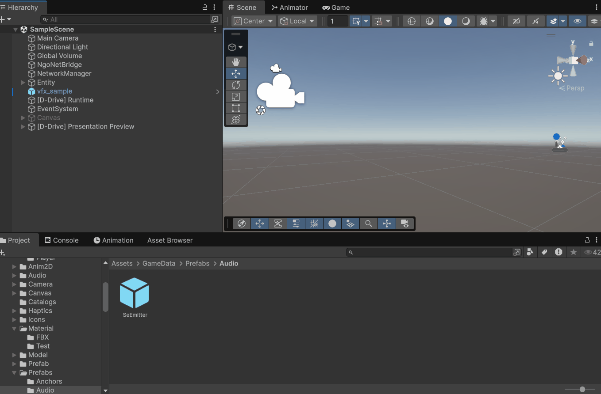

シーンに環境音を置く（SeEmitter）
滝の音、焚き火のパチパチ音、機械のうなり音——「その場所に近づくと聞こえてくる音」は、SeEmitter（エスイー・エミッター） という部品をシーンに置くだけで実現できます。プログラムは不要です。
手順
- まず鳴らしたい音を SE として登録しておく（→ Asset Browser の使い方）。このとき:
- Loop にチェック（鳴りっぱなしにするため）
- Spatial を Anchor に（近づくと聞こえるようにするため）
- Min / Max Distance で聞こえる範囲を調整（→ SE の設定項目）
- Project ウィンドウの
Assets/GameData/Prefabs/Audio/SeEmitter（プレハブ = 使い回せる部品のひな形）を、Hierarchy（ヒエラルキー）ウィンドウへドラッグ＆ドロップし、音を鳴らしたい場所に移動する
- 置いた SeEmitter の
Se Id 欄をクリック → 一覧から登録した音を選ぶ

Project の SeEmitter プレハブを Hierarchy へドラッグする
プレハブが見つからない場合: メニューの Tools → D-Drive → Generate → 標準プレハブを生成 を一度実行すると作られます。空のオブジェクトに自分で Add Component して組むこともできますが、ひな形のプレハブを使う方が設定漏れがなくおすすめです。
これで、ゲームを実行するとそのオブジェクトの有効化と同時に音が鳴り始め、オブジェクトが無効化・削除されると止まります。
音の選択欄（Se Id）について
- クリックすると検索付きの一覧が開きます。表示名で選べます
- 赤く表示されている場合: 選ばれている音が削除されている等、正しく参照できていません。選び直してください
- <None> のままだと何も鳴りません
よくある「鳴らない」チェックリスト
- SE データの Loop にチェックが入っているか（入っていないと一瞬鳴って終わり）
- SE データの Spatial が None になっていないか（None だと距離に関係なく鳴るため、環境音としては不自然になります）
- Max Distance が小さすぎないか（その範囲に近づかないと聞こえません）
- Volume が 0 になっていないか
関連ページ